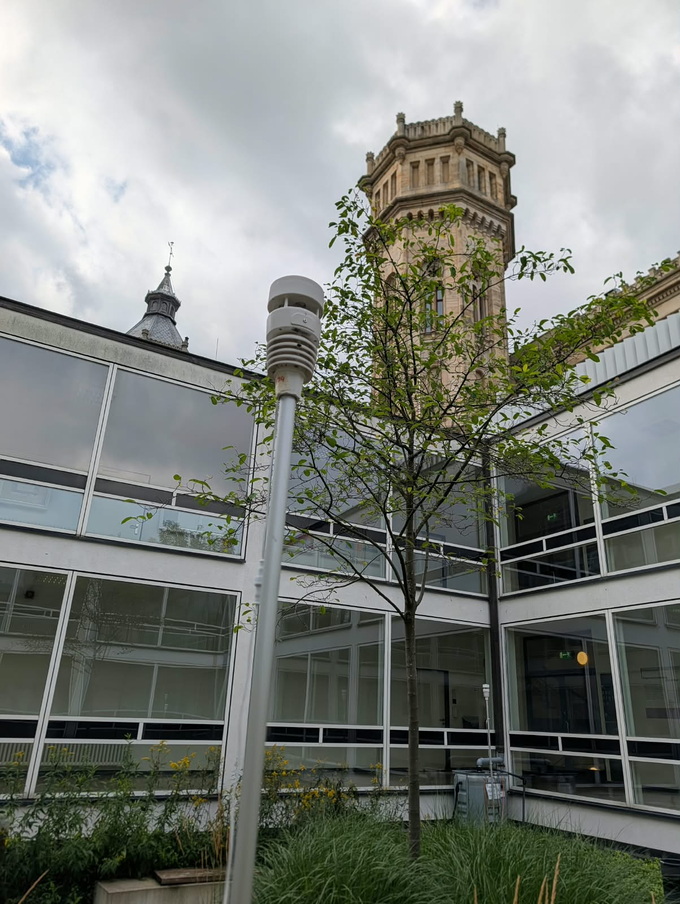
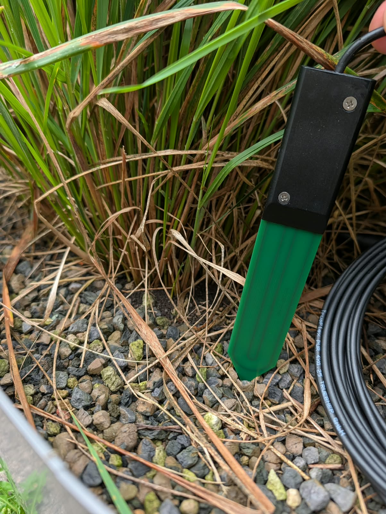
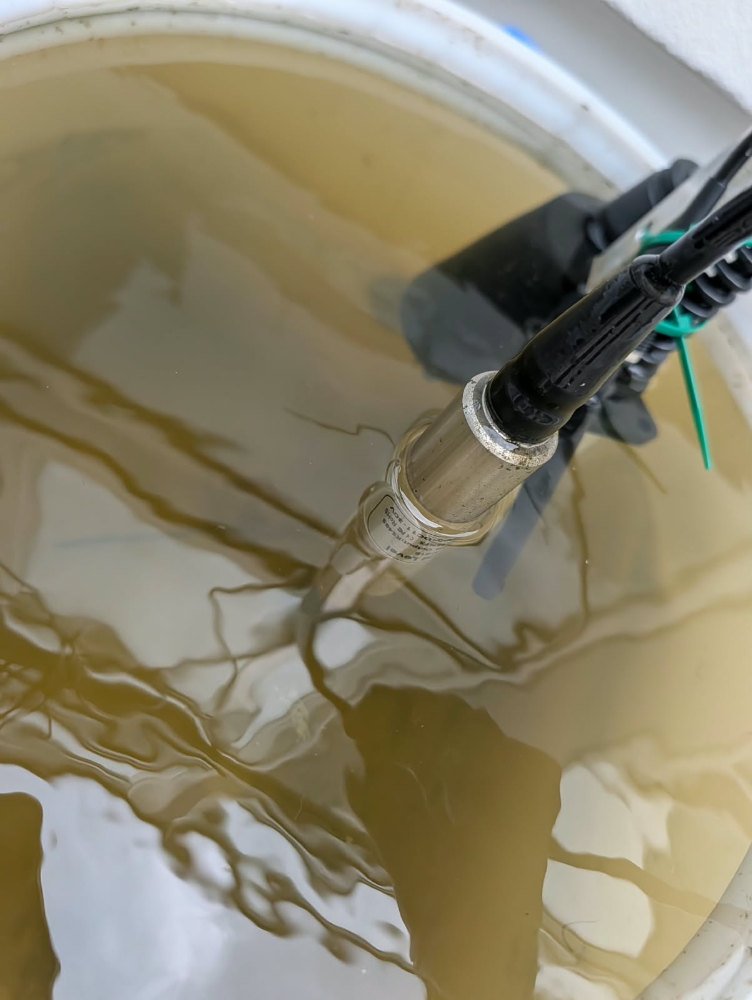
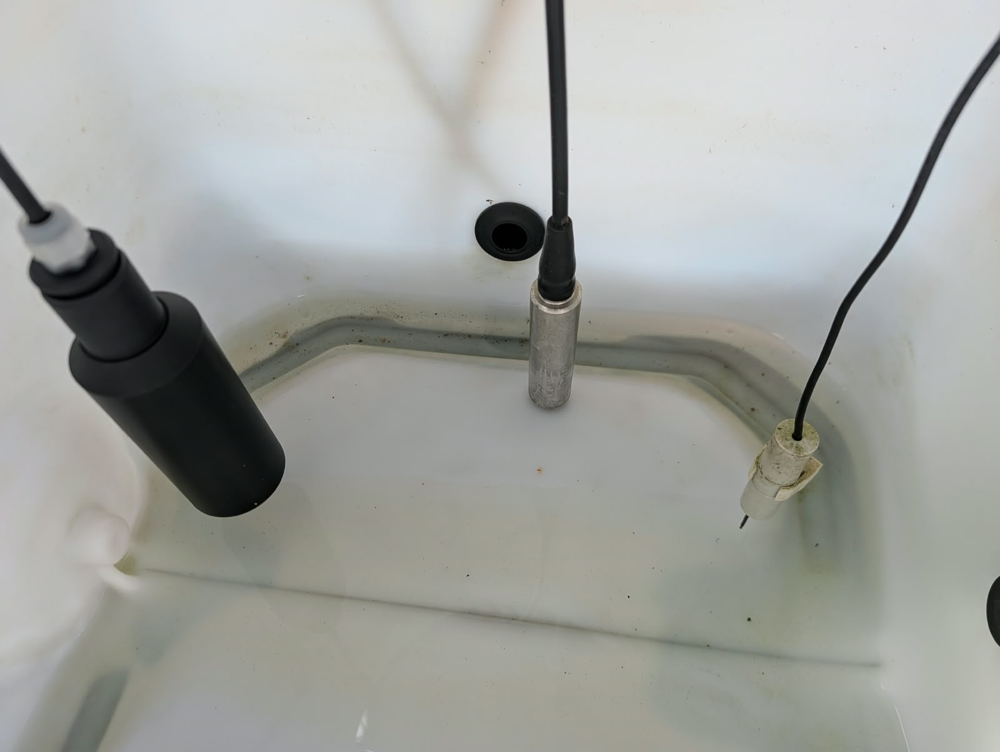

A distributed sensor network continuously monitors weather, soil conditions, tank levels, local climate and rainwater quality throughout the Blue Green Yard.
The Blue Green Yard combines different sensor technologies into one integrated monitoring system. Environmental conditions, soil, weather, storage levels and water quality are measured continuously and made available for analysis, visualization and automated system control.
Six Ecowitt WS90 weather stations monitor local meteorological conditions throughout the courtyard.
Truebner SMT100 sensors monitor soil conditions in planting beds, lawns, around the tree and at different depths within the soil column.
RS485 liquid-level sensors continuously monitor the water levels of the four main tanks, the CWH reservoir and the filtrate reservoir.
Six THP sensors measure temperature, relative humidity and atmospheric pressure at different locations.
Dedicated quality sensors monitor the water condition inside each of the four main rainwater storage tanks.
pH, conductivity and turbidity sensors monitor the water quality of the CWH system and filtrate stream.
A leaf wetness and temperature sensor is installed at the tree monitoring location.

Local measurement of weather conditions provides the basis for rainfall evaluation and microclimate monitoring.

Sensors monitor soil conditions in lawns, planting beds, near the tree and at different soil depths.

Continuous water-level measurements provide the current storage volume for rainwater management.

Water-quality sensors provide the basis for future quality-oriented rainwater management.
Sensors continuously record environmental and water-related parameters.
Sensors are individually addressed and integrated into the digital infrastructure.
Measurements are collected and stored centrally for further analysis.
Current and historical sensor values are displayed in the dashboard.
Selected measurements are used as input for intelligent system decisions.
Overview of the installed sensor infrastructure in the Blue Green Yard.
| Sensor ID | Sensor Type | Location | Modbus Address | Status |
|---|---|---|---|---|
| 1200-S sc V2 - PH SENSOR | CWH pH Sensor | Innenhof | 203 | Active |
| 1200-S sc V2 - PH SENSOR Filtrat | CWH pH Sensor | Innenhof | 206 | Active |
| 34xx sc - ContCond8403 | CWH Conductivity Sensor | Innenhof | 204 | Active |
| 34xx sc - ContCond8403 Filtrat | CWH Conductivity Sensor | Innenhof | 207 | Active |
| Baum | Truebner SMT100 | Innenhof | 9 | Active |
| Blattsensor Baum | Seeed Leaf Wetness + Temperature Sensor | Innenhof | 70 | Inactive |
| Bodensäule 30 cm | Truebner SMT100 | Innenhof | 10 | Active |
| Bodensäule 60 cm | Truebner SMT100 | Innenhof | 11 | Active |
| Bodensäule 90 cm | Truebner SMT100 | Innenhof | 12 | Active |
| Großer Rasen | Truebner SMT100 | Innenhof | 8 | Active |
| Kleiner Rasen | Truebner SMT100 | Innenhof | 7 | Active |
| Level Filtrat | Seeed RS485 Liquid Level Sensor | Innenhof | 32 | Active |
| Level Vorlage | Seeed RS485 Liquid Level Sensor | Innenhof | 31 | Active |
| Levelsensor 1 | Seeed RS485 Liquid Level Sensor | Innenhof | 27 | Active |
| Levelsensor 2 | Seeed RS485 Liquid Level Sensor | Innenhof | 28 | Active |
| Levelsensor 3 | Seeed RS485 Liquid Level Sensor | Innenhof | 29 | Active |
| Levelsensor 4 | Seeed RS485 Liquid Level Sensor | Innenhof | 30 | Active |
| Seeed THP 1 | Seeed S-THP-01A Temperature / Humidity / Pressure | Innenhof | 138 | Active |
| Seeed THP 2 | Seeed S-THP-01A Temperature / Humidity / Pressure | Innenhof | 139 | Active |
| Seeed THP 3 | Seeed S-THP-01A Temperature / Humidity / Pressure | Innenhof | 140 | Active |
| Seeed THP 4 | Seeed S-THP-01A Temperature / Humidity / Pressure | Innenhof | 141 | Active |
| Seeed THP 5 | Seeed S-THP-01A Temperature / Humidity / Pressure | Innenhof | 142 | Active |
| Seeed THP 6 | Seeed S-THP-01A Temperature / Humidity / Pressure | Innenhof | 143 | Active |
| SMT100 Beet 1 | Truebner SMT100 | Innenhof | 5 | Active |
| SMT100 Beet 2 | Truebner SMT100 | Innenhof | 13 | Active |
| SMT100 Beet 3 | Truebner SMT100 | Innenhof | 14 | Active |
| SMT100 Beet 4 | Truebner SMT100 | Innenhof | 6 | Active |
| SOLITAX sc - 2494057 | CWH SOLITAX Turbidity Sensor | Innenhof | 202 | Active |
| SOLITAX sc - Filtrat | CWH SOLITAX Turbidity Sensor | Innenhof | 205 | Active |
| Tankqualität 1 | Tank Quality Sensor | Innenhof | 60 | Active |
| Tankqualität 2 | Tank Quality Sensor | Innenhof | 61 | Active |
| Tankqualität 3 | Tank Quality Sensor | Innenhof | 62 | Active |
| Tankqualität 4 | Tank Quality Sensor | Innenhof | 63 | Active |
| Wetterstation 1 | Ecowitt WS90 Modbus RTU | Innenhof | 144 | Active |
| Wetterstation 2 | Ecowitt WS90 Modbus RTU | Innenhof | 145 | Active |
| Wetterstation 3 | Ecowitt WS90 Modbus RTU | Innenhof | 146 | Active |
| Wetterstation 4 | Ecowitt WS90 Modbus RTU | Innenhof | 147 | Active |
| Wetterstation 5 | Ecowitt WS90 Modbus RTU | Innenhof | 148 | Active |
| Wetterstation 6 | Ecowitt WS90 Modbus RTU | Innenhof | 151 | Active |